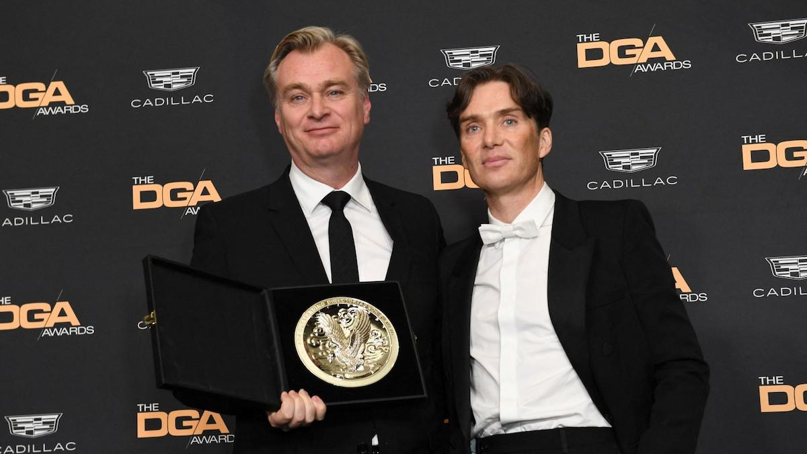
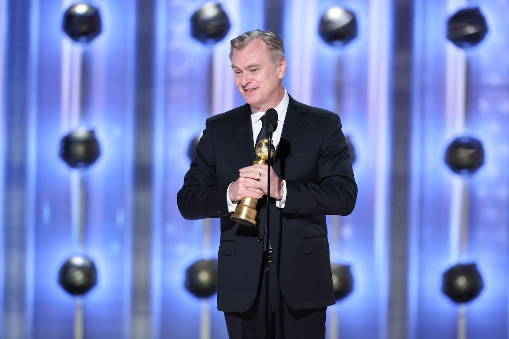
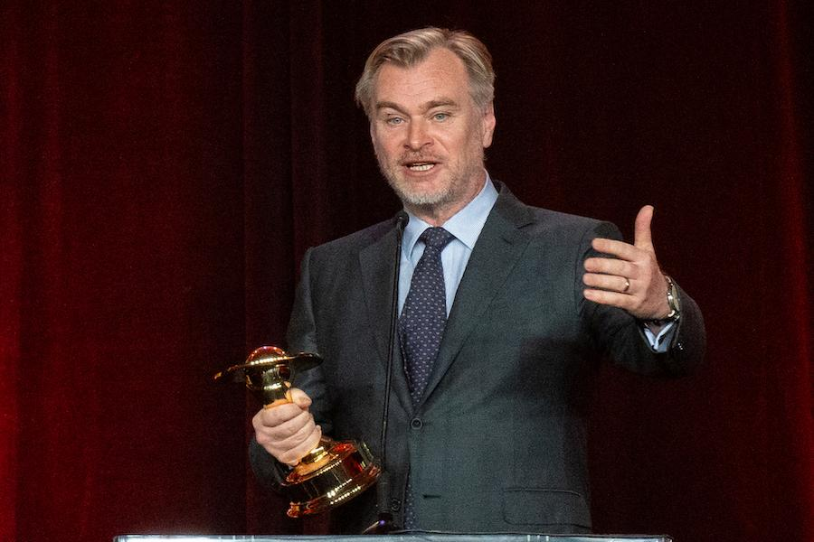

Les Distinctions de Christopher Nolan
Mettez vos connaissances à l'épreuve ! Cliquez (ou tapotez) sur chaque bloc pour deviner la distinction remportée, puis découvrez la récompense et son contexte.
Indice : Une statuette dorée remportée pour son film sur la bombe atomique.
Oscar du Meilleur Réalisateur
Décerné pour son travail sur le film Oppenheimer (96e cérémonie des Oscars). C'est le premier Oscar de la catégorie remporté par Nolan, reconnaissant la maîtrise de sa mise en scène et de sa narration complexe.

Indice : Une récompense britannique pour un film sur la Seconde Guerre mondiale raconté en trois temporalités.
BAFTA du Meilleur Réalisateur
BAFTA remporté pour Dunkerque (Dunkirk) en 2018. Cette distinction souligne sa capacité à transformer un événement historique en un thriller immersif jouant avec la perception du temps.
Indice : Un prix de la profession pour son film le plus cérébral, se déroulant dans l'architecture du rêve.
Prix de la Guilde des Réalisateurs (DGA Award)
Gagné pour le film Inception en 2011. Ce prix est souvent considéré comme l'un des indicateurs les plus fiables de l'Oscar du meilleur réalisateur, reconnaissant le leadership et la vision créative de Nolan sur le plateau.
Indice : Une récompense décernée par la presse étrangère de Hollywood pour son travail sur le film atomique.
Golden Globe du Meilleur Réalisateur
Obtenu pour le film Oppenheimer (81e cérémonie des Golden Globes en 2024). C'était son premier Golden Globe. Le prix, décerné par la presse étrangère de Hollywood, reconnaît la maîtrise de l'ampleur et de la complexité du biopic historique.
Indice : Une récompense spécialisée dans la Science-Fiction, le Fantastique et l'Horreur, gagnée pour sa maîtrise du genre dans le monde du rêve.
Saturn Award de la Meilleure Réalisation
Remporté pour Inception (37e cérémonie des Saturn Awards en 2011). Nolan est un habitué des Saturn Awards et cette distinction récompense sa direction innovante dans l'architecture scénaristique du film de science-fiction.
